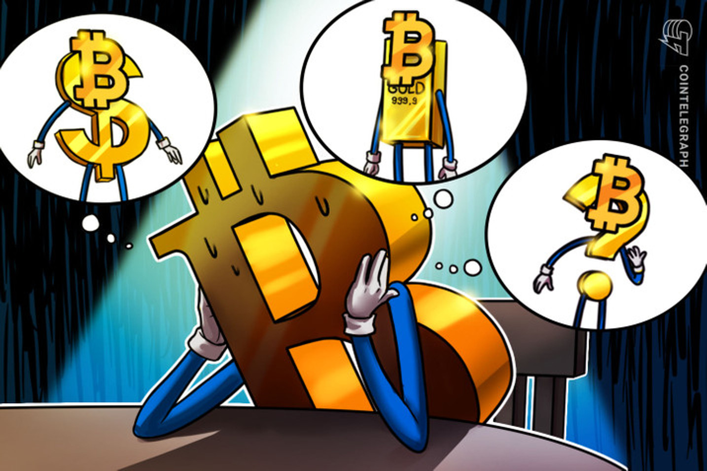
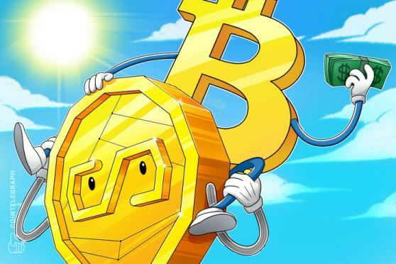
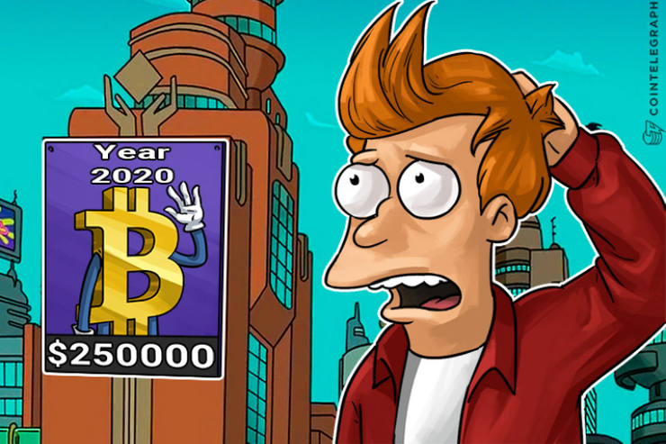

| Los Bitcoins tienen valor porque son útiles como moneda. Tiene las características del dinero (durabilidad, portabilidad, fungibilidad, escasez, divisibilidad y reconocibilidad) basado en propiedades matemáticas en vez de confiar en propiedades físicas (como el oro y la plata) o confiar en autoridades centralistas (como las monedas fiduciarias). Abreviando, Bitcoin esta respaldado por las matemáticas. Con estos atributos, todo lo que necesita esta clase de dinero para mantener su valor es confianza y adopción. En el caso de Bitcoin, podemos medirlo con su crecimiento en usuarios, comerciantes y empresas nacientes. Como cualquier moneda, el valor del Bitcoin se consigue sola y directamente de la gente que quiere aceptarlo como pago. |  |
|  | El precio del bitcoin se determina por la oferta y la demanda. Cuando se incrementa la demanda de bitcoin, el precio sube, y cuando cae la demanda, cae el precio. Hay un número limitado de bitcoins en circulación y los nuevos bitcoins son creados a una velocidad predecible y decreciente, esto significa que la demanda debe seguir este nivel de inflación para mantener un precio estable. Debido a que Bitcoin es todavía un mercado relativamente pequeño comparado con lo que podrá llegar a ser, no es necesaria una significativa cantidad de dinero para mover el precio del mercado arriba o abajo, es por eso que el precio del bitcoin es todavía muy volatil. |
| Sí. La historia esta llena de monedas que fracasaron y ya no se utilizan, como el Marco Alemán durante la Republica de Weimar y, mas recientemente, el Dolar Zimbabuense. Aunque el fracaso de las anteriores monedas ocurrió por la hiperinflación, lo cual es imposible que ocurra con Bitcoin, siempre existe la posibilidad de fracasos técnicos, competencia entre monedas, problemas políticos, etc. Como regla de oro básica, ninguna moneda debe considerarse libre de fracasos o malos tiempos. Bitcoin ha probado ser de confianza durante años desde su creación y tiene muchísimo potencial para que siga creciendo. Aún así, nadie es capaz de predecir cual será su futuro. |  |